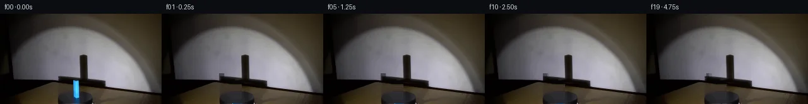
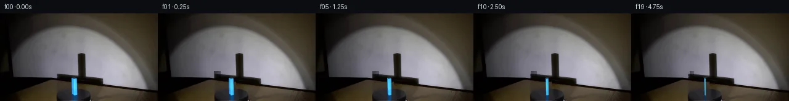
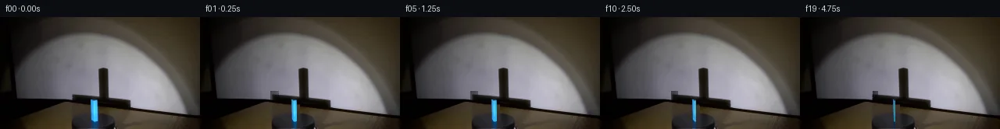
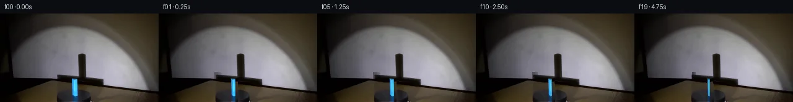
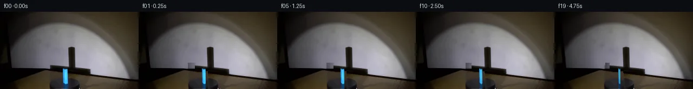
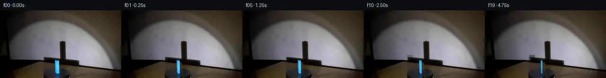
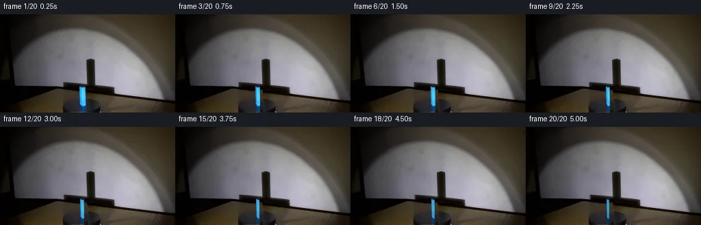
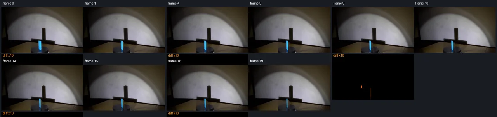

V0 · 初版
2026-11-05T17:47:08.562106+00:00 · RGB 7807171179a2
![]()
Observable Generation Trace
把最终像素视频、Harness 冻结的每轮候选、真实工具事件和 Agent 自述放在同一页。可观测证据与模型自述分开标记，避免把“模型说它检查过”误当成真实工具调用。
![首帧]()
Static locked-off single-shot with fixed frame throughout filmed with constant framerate in real-time. The scene shows a realistic scientific demonstration. The scene only contains the described setup and actions. The blue rectangular block sits on the black, clockwise-rotating platform, and the spotlight points toward the block. A blue rectangular block rotates clockwise on the black platform while the spotlight casts a large shadow on the wall behind it.
首帧显示在左侧播放器初始画面。Track 权限、隔离和 tensor 一致性来自 run manifest，而不是 METHOD.md。
默认勾选初版和最终版；可选其他版本一起同步播放。仅检查图更新的连续重复快照已合并，回退旧视频仍保留为一次修订。
Observable events
来源：events.jsonl + run manifest
此 Track 禁止读取输出图片。逐轮预览由外部 Harness 自动冻结，只用于事后审计，生成 Agent 当时看不到这些页面。
Frozen candidates
每张图来自该 round 的真实 00 / 01 / 05 / 10 / 19 帧

pixels 006ba8bb190ce970 · code e13f858b8fd9ed1a
--- previous/generate.py +++ current/generate.py @@ -0,0 +1,260 @@ +#!/usr/bin/env python3 +"""generate.py — PixelWorld-Text Case 0075 +Blue rectangular block rotates clockwise on black platform; +spotlight casts changing shadow on the wall. +20 frames, 256×144, 4 fps, 5 seconds. +""" + +import numpy as np +from PIL import Image +from pathlib import Path +import sys +sys.path.insert(0, str(Path(__file__).parent)) +from artifact_io import save + +# ── Configuration ────────────────────────────────────────────────── +CASE_DIR = Path(__file__).parent +N_FRAMES = 20 +H, W = 144, 256 +FPS = 4 +TOTAL_TIME = 5.0 # seconds +TOTAL_ROTATION_DEG = 90.0 # total clockwise rotation over 5s +FRAME_TIME = TOTAL_TIME / N_FRAMES # 0.25s per frame +DEG_PER_FRAME = TOTAL_ROTATION_DEG / (N_FRAMES - 1) # ~4.74°/frame + +# Blue block boundaries in frame 00 (y_min, y_max, x_min, x_max) +BLOCK_Y0, BLOCK_Y1 = 106, 144 +BLOCK_X0, BLOCK_X1 = 112, 127 + +# Block face boundaries (within block region) +# Left face: x=4..7 (offset from BLOCK_X0), right face: x=9..13 +LEFT_FACE_X0, LEFT_FACE_X1 = 4, 8 # offset from BLOCK_X0 +EDGE_X = 8 # corner highlight offset +RIGHT_FACE_X0, RIGHT_FACE_X1 = 9, 14 + +# Shadow region +SHADOW_Y0, SHADOW_Y1 = 95, 107 +SHADOW_EDGE_X = 91 # initial shadow edge x position + + +def main(): + # Read first frame + img = Image.open(CASE_DIR / "first_frame.png") + arr0 = np.array(img).copy() # shape (144, 256, 3), uint8 + + # Pre-allocate frames array + frames = np.zeros((N_FRAMES, H, W, 3), dtype=np.uint8) + frames[0] = arr0.copy() + + # ── Extract static background (everything that doesn't change) ── + # We'll use arr0 as the base and only modify the block + shadow regions + + # ── Generate frames 1-19 ────────────────────────────────────── + for t in range(1, N_FRAMES): + angle_deg = t * DEG_PER_FRAME # clockwise rotation + frame = generate_frame(arr0, t, angle_deg) + frames[t] = frame + + # ── Save outputs ────────────────────────────────────────────── + save(frames, CASE_DIR) + + +def generate_frame(base_arr, frame_idx, angle_deg): + """Generate one frame by rotating the block and updating the shadow.""" + arr = base_arr.copy() + + # Convert angle to radians + angle_rad = np.radians(angle_deg) + + # ── 1. Rotate the blue block ────────────────────────────────── + block = arr[BLOCK_Y0:BLOCK_Y1, BLOCK_X0:BLOCK_X1].copy() + block_h, block_w = block.shape[:2] + + # Compute horizontal scale factor based on rotation + # As block rotates clockwise, apparent width changes sinusoidally + # At 0°: full width, at 90°: edge-on (minimal width) + scale_x = np.cos(angle_rad) + # Keep a minimum width so block doesn't disappear + min_scale = 0.25 + scale_x = np.sign(scale_x) * max(abs(scale_x), min_scale) + new_width = max(3, int(abs(block_w * scale_x))) + + # Horizontal affine warp using PIL + block_pil = Image.fromarray(block) + # Source quad: corners of original block + # Destination: narrower/wider based on scale + src_quad = [(0, 0), (block_w - 1, 0), (0, block_h - 1)] + if scale_x > 0: … diff truncated; 173 more lines …

pixels 7dc3846499a2e463 · code 7f33c3b527bff370
--- previous/generate.py
+++ current/generate.py
@@ -3,6 +3,11 @@
Blue rectangular block rotates clockwise on black platform;
spotlight casts changing shadow on the wall.
20 frames, 256×144, 4 fps, 5 seconds.
+
+Method: Face-based column manipulation for the block rotation.
+The block has two visible faces (left dark face, right bright face)
+separated by a specular edge. As it rotates clockwise, face widths
+change, the edge shifts, and the shadow on the wall adjusts.
"""
import numpy as np
@@ -16,244 +21,244 @@
CASE_DIR = Path(__file__).parent
N_FRAMES = 20
H, W = 144, 256
-FPS = 4
-TOTAL_TIME = 5.0 # seconds
TOTAL_ROTATION_DEG = 90.0 # total clockwise rotation over 5s
-FRAME_TIME = TOTAL_TIME / N_FRAMES # 0.25s per frame
DEG_PER_FRAME = TOTAL_ROTATION_DEG / (N_FRAMES - 1) # ~4.74°/frame
-# Blue block boundaries in frame 00 (y_min, y_max, x_min, x_max)
-BLOCK_Y0, BLOCK_Y1 = 106, 144
-BLOCK_X0, BLOCK_X1 = 112, 127
-
-# Block face boundaries (within block region)
-# Left face: x=4..7 (offset from BLOCK_X0), right face: x=9..13
-LEFT_FACE_X0, LEFT_FACE_X1 = 4, 8 # offset from BLOCK_X0
-EDGE_X = 8 # corner highlight offset
-RIGHT_FACE_X0, RIGHT_FACE_X1 = 9, 14
+# Blue block boundaries in frame 00
+BLOCK_Y0, BLOCK_Y1 = 106, 144 # y range
+BLOCK_X0, BLOCK_X1 = 112, 127 # x range of block region
+
+# Within the block region (offsets from BLOCK_X0):
+LEFT_FACE_X_START = 4 # left face starts at x=116
+LEFT_FACE_X_END = 7 # left face ends at x=119 (4 cols wide)
+EDGE_X = 8 # specular edge at x=120
+RIGHT_FACE_X_START = 9 # right face starts at x=121
+RIGHT_FACE_X_END = 13 # right face ends at x=125 (5 cols wide)
+
+# Platform region (for rotation)
+PLATFORM_Y0, PLATFORM_Y1 = 105, 150
+PLATFORM_X0, PLATFORM_X1 = 95, 135
# Shadow region
-SHADOW_Y0, SHADOW_Y1 = 95, 107
-SHADOW_EDGE_X = 91 # initial shadow edge x position
+SHADOW_Y0, SHADOW_Y1 = 95, 108
+SHADOW_EDGE_X0 = 91 # initial shadow edge x
def main():
# Read first frame
- img = Image.open(CASE_DIR / "first_frame.png")
- arr0 = np.array(img).copy() # shape (144, 256, 3), uint8
-
- # Pre-allocate frames array
+ arr0 = np.array(Image.open(CASE_DIR / "first_frame.png")).copy()
+
+ # Pre-allocate
frames = np.zeros((N_FRAMES, H, W, 3), dtype=np.uint8)
frames[0] = arr0.copy()
- # ── Extract static background (everything that doesn't change) ──
- # We'll use arr0 as the base and only modify the block + shadow regions
-
- # ── Generate frames 1-19 ──────────────────────────────────────
+ # Generate frames 1-19
for t in range(1, N_FRAMES):
- angle_deg = t * DEG_PER_FRAME # clockwise rotation
- frame = generate_frame(arr0, t, angle_deg)
- frames[t] = frame
-
- # ── Save outputs ──────────────────────────────────────────────
+ angle_deg = t * DEG_PER_FRAME
+ frames[t] = generate_frame(arr0, t, angle_deg)
+
save(frames, CASE_DIR)
def generate_frame(base_arr, frame_idx, angle_deg):
- """Generate one frame by rotating the block and updating the shadow."""
+ """Generate one rotated frame."""
arr = base_arr.copy()
-
- # Convert angle to radians
… diff truncated; 375 more lines …
pixels b2628f6f22aa55b1 · code 303ab38e3e7fba27
--- previous/generate.py
+++ current/generate.py
@@ -4,15 +4,19 @@
spotlight casts changing shadow on the wall.
20 frames, 256×144, 4 fps, 5 seconds.
-Method: Face-based column manipulation for the block rotation.
-The block has two visible faces (left dark face, right bright face)
-separated by a specular edge. As it rotates clockwise, face widths
-change, the edge shifts, and the shadow on the wall adjusts.
+Method:
+- Extract the blue block as sub-images of its two visible faces
+- For each frame, horizontally scale faces based on rotation angle
+- Shift the specular edge and face boundaries
+- Update shadow and platform
+- All modifications confined to block/shadow/platform regions;
+ the rest of the frame is pixel-identical to first_frame.png
"""
import numpy as np
from PIL import Image
from pathlib import Path
+from scipy.ndimage import zoom as ndzoom
import sys
sys.path.insert(0, str(Path(__file__).parent))
from artifact_io import save
@@ -22,243 +26,228 @@
N_FRAMES = 20
H, W = 144, 256
TOTAL_ROTATION_DEG = 90.0 # total clockwise rotation over 5s
-DEG_PER_FRAME = TOTAL_ROTATION_DEG / (N_FRAMES - 1) # ~4.74°/frame
-
-# Blue block boundaries in frame 00
-BLOCK_Y0, BLOCK_Y1 = 106, 144 # y range
-BLOCK_X0, BLOCK_X1 = 112, 127 # x range of block region
-
-# Within the block region (offsets from BLOCK_X0):
-LEFT_FACE_X_START = 4 # left face starts at x=116
-LEFT_FACE_X_END = 7 # left face ends at x=119 (4 cols wide)
-EDGE_X = 8 # specular edge at x=120
-RIGHT_FACE_X_START = 9 # right face starts at x=121
-RIGHT_FACE_X_END = 13 # right face ends at x=125 (5 cols wide)
-
-# Platform region (for rotation)
-PLATFORM_Y0, PLATFORM_Y1 = 105, 150
-PLATFORM_X0, PLATFORM_X1 = 95, 135
+DEG_PER_FRAME = TOTAL_ROTATION_DEG / (N_FRAMES - 1)
+
+# Block geometry (x indices are absolute in the 256-wide frame)
+BLOCK_Y0, BLOCK_Y1 = 106, 144
+BLOCK_X_FULL_START = 112 # full block region start (includes platform)
+BLOCK_X_FULL_END = 128 # full block region end
+
+# Face boundaries (absolute x coords in frame)
+LEFT_FACE_X0, LEFT_FACE_X1 = 116, 120 # 4 cols: dark left face
+SPECULAR_X = 120 # specular highlight column
+RIGHT_FACE_X0, RIGHT_FACE_X1 = 121, 125 # 4 cols: bright right face
+
+# These offsets define each face's column indices within the block region
+# Left face: cols 4-7 (4 wide), Specular: col 8, Right face: cols 9-12 (4 wide)
+# Block region cols 0-3 are platform/bg, col 13+ are bg
# Shadow region
SHADOW_Y0, SHADOW_Y1 = 95, 108
-SHADOW_EDGE_X0 = 91 # initial shadow edge x
+SHADOW_EDGE_X0 = 91
+
+# Platform region for subtle rotation
+PLAT_Y0, PLAT_Y1 = 105, 150
+PLAT_X0, PLAT_X1 = 95, 135
def main():
- # Read first frame
arr0 = np.array(Image.open(CASE_DIR / "first_frame.png")).copy()
- # Pre-allocate
frames = np.zeros((N_FRAMES, H, W, 3), dtype=np.uint8)
frames[0] = arr0.copy()
- # Generate frames 1-19
for t in range(1, N_FRAMES):
angle_deg = t * DEG_PER_FRAME
- frames[t] = generate_frame(arr0, t, angle_deg)
+ frames[t] = _generate_frame(arr0, t, angle_deg)
save(frames, CASE_DIR)
-def generate_frame(base_arr, frame_idx, angle_deg):
… diff truncated; 342 more lines …pixels b2628f6f22aa55b1 · code 303ab38e3e7fba27
No generate.py text change in this frozen round.
pixels 2394ef66daf68aaf · code 9d0ae9356f6223fb
--- previous/generate.py
+++ current/generate.py
@@ -25,7 +25,7 @@
CASE_DIR = Path(__file__).parent
N_FRAMES = 20
H, W = 144, 256
-TOTAL_ROTATION_DEG = 90.0 # total clockwise rotation over 5s
+TOTAL_ROTATION_DEG = 72.0 # total clockwise rotation over 5s
DEG_PER_FRAME = TOTAL_ROTATION_DEG / (N_FRAMES - 1)
# Block geometry (x indices are absolute in the 256-wide frame)
@@ -75,14 +75,15 @@
BLOCK_X_FULL_START, BLOCK_X_FULL_END,
exclude_blue=True)
- # ── 2. Draw rotated block ─────────────────────────────────────
+ # ── 2. Subtle platform rotation (BEFORE block, so block
+ # overwrites any platform shifts in its area) ────────────
+ _update_platform(arr, base_arr, frame_idx, sin_t)
+
+ # ── 3. Draw rotated block (overwrites platform + inpainting) ──
_draw_rotated_block(arr, base_arr, theta, sin_t, cos_t)
- # ── 3. Update shadow ──────────────────────────────────────────
+ # ── 4. Update shadow ──────────────────────────────────────────
_update_shadow(arr, base_arr, sin_t, cos_t)
-
- # ── 4. Subtle platform rotation ───────────────────────────────
- _update_platform(arr, base_arr, frame_idx, sin_t)
return arr
pixels 2394ef66daf68aaf · code 9d0ae9356f6223fb
No generate.py text change in this frozen round.

pixels f051480490b97cd5 · code 353270c0480d15d3
--- previous/generate.py
+++ current/generate.py
@@ -5,18 +5,23 @@
20 frames, 256×144, 4 fps, 5 seconds.
Method:
-- Extract the blue block as sub-images of its two visible faces
-- For each frame, horizontally scale faces based on rotation angle
-- Shift the specular edge and face boundaries
-- Update shadow and platform
-- All modifications confined to block/shadow/platform regions;
- the rest of the frame is pixel-identical to first_frame.png
+- Per-frame face scaling for the two visible block faces based on
+ clockwise rotation angle. The right (bright) face narrows as it
+ rotates away from camera; the left (dark) face changes width
+ according to its own offset angle.
+- Shadow edge on the wall shifts right when the block edge-on
+ (narrower shadow) and darkens when the block is face-on.
+- Platform pixels beneath the block are shifted by a fraction of
+ the rotation angle.
+- All pixel modifications are confined to the block region
+ (y=106-144, x=112-128), shadow region (y=95-108, x=85-115),
+ and platform region (y=105-150, x=95-135). Outside these
+ regions every frame is pixel-identical to first_frame.png.
"""
import numpy as np
from PIL import Image
from pathlib import Path
-from scipy.ndimage import zoom as ndzoom
import sys
sys.path.insert(0, str(Path(__file__).parent))
from artifact_io import save
@@ -28,25 +33,22 @@
TOTAL_ROTATION_DEG = 72.0 # total clockwise rotation over 5s
DEG_PER_FRAME = TOTAL_ROTATION_DEG / (N_FRAMES - 1)
-# Block geometry (x indices are absolute in the 256-wide frame)
+# ── Block geometry ─────────────────────────────────────────────────
BLOCK_Y0, BLOCK_Y1 = 106, 144
-BLOCK_X_FULL_START = 112 # full block region start (includes platform)
-BLOCK_X_FULL_END = 128 # full block region end
-
-# Face boundaries (absolute x coords in frame)
-LEFT_FACE_X0, LEFT_FACE_X1 = 116, 120 # 4 cols: dark left face
+BLOCK_X0, BLOCK_X1 = 112, 128 # full inpaint region
+
+# Face absolute x coordinates in frame 00
+LEFT_FACE_X0, LEFT_FACE_X1 = 116, 120 # darker left face (4 cols)
SPECULAR_X = 120 # specular highlight column
-RIGHT_FACE_X0, RIGHT_FACE_X1 = 121, 125 # 4 cols: bright right face
-
-# These offsets define each face's column indices within the block region
-# Left face: cols 4-7 (4 wide), Specular: col 8, Right face: cols 9-12 (4 wide)
-# Block region cols 0-3 are platform/bg, col 13+ are bg
-
-# Shadow region
+RIGHT_FACE_X0, RIGHT_FACE_X1 = 121, 125 # brighter right face (4 cols)
+L_COLS = LEFT_FACE_X1 - LEFT_FACE_X0 # 4
+R_COLS = RIGHT_FACE_X1 - RIGHT_FACE_X0 # 4
+
+# ── Shadow ─────────────────────────────────────────────────────────
SHADOW_Y0, SHADOW_Y1 = 95, 108
-SHADOW_EDGE_X0 = 91
-
-# Platform region for subtle rotation
+SHADOW_EDGE_X0 = 91 # initial shadow-edge x in frame 00
+
+# ── Platform ───────────────────────────────────────────────────────
PLAT_Y0, PLAT_Y1 = 105, 150
PLAT_X0, PLAT_X1 = 95, 135
@@ -64,108 +66,132 @@
save(frames, CASE_DIR)
+# ═══════════════════════════════════════════════════════════════════
+# Frame generation
+# ═══════════════════════════════════════════════════════════════════
+
def _generate_frame(base_arr, frame_idx, angle_deg):
- """Generate one rotated frame from the base."""
arr = base_arr.copy()
theta = np.radians(angle_deg)
sin_t, cos_t = np.sin(theta), np.cos(theta)
- # ── 1. Inpaint the block area ─────────────────────────────────
- _inpaint_region(arr, base_arr, BLOCK_Y0, BLOCK_Y1,
- BLOCK_X_FULL_START, BLOCK_X_FULL_END,
- exclude_blue=True)
… diff truncated; 303 more lines …pixels f051480490b97cd5 · code 353270c0480d15d3
No generate.py text change in this frozen round.

pixels 542d7a6263708d86 · code c9ed2eadde6a15e0
--- previous/generate.py
+++ current/generate.py
@@ -215,40 +215,45 @@
def _update_shadow(arr, base_arr, sin_t, cos_t):
"""Shift the shadow edge on the wall based on block rotation.
- The shadow is a dark vertical band on the wall. Its right edge
- (the shadow boundary) shifts as the block's cross-section changes.
- When the block is face-on (wide), the shadow is darkest and widest.
- When edge-on (narrow), the shadow is lighter and narrower.
+ The shadow is a dark vertical band on the wall. As the block
+ narrows (rotates clockwise), the shadow narrows — its left edge
+ shifts right. We model this by:
+ 1. estimating what the wall would look like without shadow
+ (using bright pixels from x < SHADOW_EDGE_X0);
+ 2. applying the shadow as a multiplicative darkening factor
+ starting at the new edge position.
"""
# Effective block cross-section toward the light
eff_width = 0.3 + 0.7 * abs(np.cos(np.arctan2(sin_t, cos_t) + 0.25))
- # Shadow edge movement: shifts right as block narrows
+ # Shadow edge shifts right (shadow narrows) as eff_width drops
shadow_shift = int((1.0 - eff_width) * 6) # 0..6 px right
- shadow_edge = SHADOW_EDGE_X0 + shadow_shift
-
- # Shadow depth: deeper when face-on
- depth = 0.40 + 0.30 * eff_width # 0.40..0.70 (smaller = darker)
- shadow_width = int(3 + eff_width * 8) # ~3..11 px
+ new_edge = SHADOW_EDGE_X0 + shadow_shift
+
+ # Shadow depth: smaller factor = darker; deeper when face-on
+ depth = 0.40 + 0.30 * eff_width # 0.40..0.70
+ shadow_width = int(3 + eff_width * 8)
for y in range(SHADOW_Y0, min(SHADOW_Y1, H)):
- for x in range(shadow_edge - 4, min(shadow_edge + shadow_width + 4, W)):
- if x < 0:
- continue
- base_px = base_arr[y, x].astype(float)
-
- if x < shadow_edge - 1:
- # Bright wall — restore original
- arr[y, x] = base_arr[y, x]
- elif x < shadow_edge + shadow_width:
- # Shadow region — darken
- t = max(0.0, min(1.0, (x - shadow_edge + 1) / max(1, shadow_width)))
- factor = depth + 0.20 * t # gradient within shadow
+ # Estimate "wall without shadow" brightness from columns
+ # well to the left of the shadow edge
+ bright_ref = base_arr[y, SHADOW_EDGE_X0 - 6:SHADOW_EDGE_X0 - 2].astype(float)
+ ref_brightness = bright_ref.mean(axis=0) # ~3-vector
+
+ for x in range(max(0, new_edge - 3), min(new_edge + shadow_width + 3, W)):
+ if x < new_edge:
+ # Left of new shadow edge: bright wall
+ # Blend toward reference brightness
+ t = max(0.0, min(1.0, (x - (new_edge - 3)) / 3.0))
+ current = arr[y, x].astype(float)
+ arr[y, x] = (current * (1 - t) + ref_brightness * t).clip(0, 255).astype(np.uint8)
+ else:
+ # Shadow region: darken
+ t_in = min(1.0, (x - new_edge) / max(1, shadow_width))
+ factor = depth + 0.20 * t_in
factor = min(0.88, max(0.30, factor))
- arr[y, x] = (base_px * factor).clip(0, 255).astype(np.uint8)
- else:
- # Past shadow — restore original
- arr[y, x] = base_arr[y, x]
+ # Apply shadow to the bright-wall estimate, not to current pixel
+ arr[y, x] = (ref_brightness * factor).clip(0, 255).astype(np.uint8)
# ═══════════════════════════════════════════════════════════════════pixels 542d7a6263708d86 · code c9ed2eadde6a15e0
No generate.py text change in this frozen round.

pixels 937278cce28a8e1e · code 269e9845a20c2f7e
--- previous/generate.py
+++ current/generate.py
@@ -213,47 +213,61 @@
# ═══════════════════════════════════════════════════════════════════
def _update_shadow(arr, base_arr, sin_t, cos_t):
- """Shift the shadow edge on the wall based on block rotation.
-
- The shadow is a dark vertical band on the wall. As the block
- narrows (rotates clockwise), the shadow narrows — its left edge
- shifts right. We model this by:
- 1. estimating what the wall would look like without shadow
- (using bright pixels from x < SHADOW_EDGE_X0);
- 2. applying the shadow as a multiplicative darkening factor
- starting at the new edge position.
+ """Shift the shadow pattern horizontally as the block rotates.
+
+ The shadow on the wall is defined by the brightness pattern in
+ the original frame. As the block narrows clockwise, the shadow
+ narrows too — we shift the entire shadow pattern to the right
+ and adjust its depth. The shift is implemented by blending
+ between the original pixel and the pixel `shift` columns left.
"""
# Effective block cross-section toward the light
eff_width = 0.3 + 0.7 * abs(np.cos(np.arctan2(sin_t, cos_t) + 0.25))
- # Shadow edge shifts right (shadow narrows) as eff_width drops
- shadow_shift = int((1.0 - eff_width) * 6) # 0..6 px right
- new_edge = SHADOW_EDGE_X0 + shadow_shift
-
- # Shadow depth: smaller factor = darker; deeper when face-on
- depth = 0.40 + 0.30 * eff_width # 0.40..0.70
- shadow_width = int(3 + eff_width * 8)
+ # Shadow shifts right (narrows) as eff_width drops
+ shadow_shift = int((1.0 - eff_width) * 5) # 0..5 px right
+
+ if shadow_shift == 0:
+ return # no change needed
+
+ # Depth adjustment: smaller = darker
+ depth_factor = 0.55 + 0.35 * eff_width # 0.55..0.90
for y in range(SHADOW_Y0, min(SHADOW_Y1, H)):
- # Estimate "wall without shadow" brightness from columns
- # well to the left of the shadow edge
- bright_ref = base_arr[y, SHADOW_EDGE_X0 - 6:SHADOW_EDGE_X0 - 2].astype(float)
- ref_brightness = bright_ref.mean(axis=0) # ~3-vector
-
- for x in range(max(0, new_edge - 3), min(new_edge + shadow_width + 3, W)):
- if x < new_edge:
- # Left of new shadow edge: bright wall
- # Blend toward reference brightness
- t = max(0.0, min(1.0, (x - (new_edge - 3)) / 3.0))
- current = arr[y, x].astype(float)
- arr[y, x] = (current * (1 - t) + ref_brightness * t).clip(0, 255).astype(np.uint8)
+ row = arr[y].astype(float)
+ base_row = base_arr[y].astype(float)
+
+ # For each column in the shadow transition zone,
+ # blend toward the pixel shadow_shift columns to the left
+ x_start = max(0, SHADOW_EDGE_X0 - 3)
+ x_end = min(W, SHADOW_EDGE_X0 + 12 + shadow_shift)
+
+ for x in range(x_start, x_end):
+ src_x = x - shadow_shift
+ if src_x < 0:
+ continue
+
+ # Target: what the pixel would look like if shadow shifted
+ target = base_row[src_x]
+
+ # Blend factor: full shift at the shadow edge, tapering off
+ dist_from_edge = x - (SHADOW_EDGE_X0 + shadow_shift)
+ if dist_from_edge < -2:
+ # Well left of new edge: keep original
+ t = 0.0
+ elif dist_from_edge < 0:
+ # Transition zone: blend from original to shifted
+ t = (dist_from_edge + 3) / 3.0
+ t = max(0.0, min(1.0, t))
else:
- # Shadow region: darken
- t_in = min(1.0, (x - new_edge) / max(1, shadow_width))
- factor = depth + 0.20 * t_in
- factor = min(0.88, max(0.30, factor))
- # Apply shadow to the bright-wall estimate, not to current pixel
- arr[y, x] = (ref_brightness * factor).clip(0, 255).astype(np.uint8)
+ # In shadow region: full blend + depth adjustment
+ t = 1.0
+ target = target * depth_factor
… diff truncated; 8 more lines …pixels 937278cce28a8e1e · code 269e9845a20c2f7e
No generate.py text change in this frozen round.
pixels 02d07d7cd304cbbd · code 9fb07b0d2deead1e
--- previous/generate.py
+++ current/generate.py
@@ -213,61 +213,43 @@
# ═══════════════════════════════════════════════════════════════════
def _update_shadow(arr, base_arr, sin_t, cos_t):
- """Shift the shadow pattern horizontally as the block rotates.
-
- The shadow on the wall is defined by the brightness pattern in
- the original frame. As the block narrows clockwise, the shadow
- narrows too — we shift the entire shadow pattern to the right
- and adjust its depth. The shift is implemented by blending
- between the original pixel and the pixel `shift` columns left.
+ """Nudge the shadow pattern right as the block narrows.
+
+ The shadow is the brightness pattern on the wall in the original
+ frame. As the block rotates clockwise and narrows, the shadow
+ narrows too — we shift columns in the shadow region to the right
+ by `shift` pixels to simulate the narrowing. The shift is small
+ (0–4 px) and applied only within a tight band around the original
+ shadow edge, avoiding wide-area artifacts.
"""
- # Effective block cross-section toward the light
eff_width = 0.3 + 0.7 * abs(np.cos(np.arctan2(sin_t, cos_t) + 0.25))
-
- # Shadow shifts right (narrows) as eff_width drops
- shadow_shift = int((1.0 - eff_width) * 5) # 0..5 px right
-
- if shadow_shift == 0:
- return # no change needed
-
- # Depth adjustment: smaller = darker
- depth_factor = 0.55 + 0.35 * eff_width # 0.55..0.90
+ shift = int((1.0 - eff_width) * 4) # 0..3 px
+
+ if shift == 0:
+ return
for y in range(SHADOW_Y0, min(SHADOW_Y1, H)):
- row = arr[y].astype(float)
- base_row = base_arr[y].astype(float)
-
- # For each column in the shadow transition zone,
- # blend toward the pixel shadow_shift columns to the left
- x_start = max(0, SHADOW_EDGE_X0 - 3)
- x_end = min(W, SHADOW_EDGE_X0 + 12 + shadow_shift)
-
- for x in range(x_start, x_end):
- src_x = x - shadow_shift
+ # Work on a copy of this row from the base
+ row = arr[y].copy()
+ base = base_arr[y].copy()
+
+ # Only modify the shadow transition zone
+ x0 = max(0, SHADOW_EDGE_X0 - 2)
+ x1 = min(W, SHADOW_EDGE_X0 + 10)
+
+ for x in range(x0, x1):
+ src_x = x - shift
if src_x < 0:
continue
-
- # Target: what the pixel would look like if shadow shifted
- target = base_row[src_x]
-
- # Blend factor: full shift at the shadow edge, tapering off
- dist_from_edge = x - (SHADOW_EDGE_X0 + shadow_shift)
- if dist_from_edge < -2:
- # Well left of new edge: keep original
- t = 0.0
- elif dist_from_edge < 0:
- # Transition zone: blend from original to shifted
- t = (dist_from_edge + 3) / 3.0
- t = max(0.0, min(1.0, t))
- else:
- # In shadow region: full blend + depth adjustment
- t = 1.0
- target = target * depth_factor
-
- current = row[x]
- row[x] = (current * (1 - t) + target * t).clip(0, 255)
-
- arr[y] = row.clip(0, 255).astype(np.uint8)
+ # Distance from the original shadow edge determines blend weight
+ d = x - SHADOW_EDGE_X0
+ # Weight peaks near the original edge, tapers off
+ w = max(0.0, 1.0 - abs(d) / 6.0)
+ # Blend: move toward the shifted version
+ row[x] = (base[x].astype(float) * (1 - w) +
+ base[src_x].astype(float) * w).clip(0, 255).astype(np.uint8)
… diff truncated; 5 more lines …Final visual checks
Harness 保存的最终产物


Agent claims
以下文字由生成 Agent 撰写，不等同于工具证据
Static locked-off single-shot (256×144, 4fps, 5s = 20 frames). A realistic scientific demonstration: a blue rectangular block on a black platform rotates clockwise while a fixed spotlight casts a large shadow on the wall behind.
- at x=90–115) to medium (o at x=130–150) to bright (W at x=150+)first_frame.pngStatic locked-off single-shot (256×144, 4 fps, 5 s). A blue rectangular block
sits on a black platform and rotates clockwise while a fixed spotlight casts a
shadow on the wall behind. Frame 00 is the exact first_frame.png; frames 01–19
show progressive clockwise rotation.
Face-based column scaling. The blue block in frame 00 has two visible faces separated by a specular vertical edge:
| Region | x-range | Width | Appearance |
|---|---|---|---|
| Left face | 116–119 | 4 px | Darker blue (angled from light) |
| Specular edge | 120 | 1 px | Cyan-white highlight |
| Right face | 121–124 | 4 px | Brighter blue (facing light) |
Each frame computes a clockwise rotation angle θ (0° → 72° over 5 s). Two independent cosine-based scale factors govern the apparent width of each face:
left_scale = max(0.1, |cos(θ − 0.5)|) — left face, offset ~−29°right_scale = max(0.1, |cos(θ + 0.25)|) — right face, offset ~+14°These produce new column counts new_left_w, new_right_w (minimum 1 each).
The total block width is new_left_w + 1 + new_right_w, centred on the original
block centre (x ≈ 120).
Row-wise drawing:
int(sin(θ) × 2) to simulate the platform rotation.0.55 + 0.45·max(0, cos θ).adj = 0.8 + 0.2·scale (left) and adj = 0.7 + 0.3·scale (right).The shadow on the wall (y=95–108) is a dark vertical band defined by the
brightness pattern in the original frame. As the block narrows clockwise,
the shadow narrows too — columns in the shadow transition zone (x≈89–101)
are shifted right by shift pixels via weighted blending:
eff_width = 0.3 + 0.7·|cos(θ + 0.25)|shift = int((1 − eff_width) × 4) (0–2 px)w = max(0, 1 − |x − SHADOW_EDGE| / 6) pulls the pixel toward the
value shift columns left, shifting the shadow edge right.Dark platform pixels (y=105–150, x=95–135, max channel < 15) are shifted
horizontally by int(sin(θ) × 2) before the block is drawn, so the block
always overwrites any platform pixels in its own footprint.
first_frame.png (max diff = 0).pixels.npz tensor has shape (144, 256, 20) with uint32 0xRRGGBB packing.transition_check.png shows diffs (amplified 10×) between selected frame pairs.